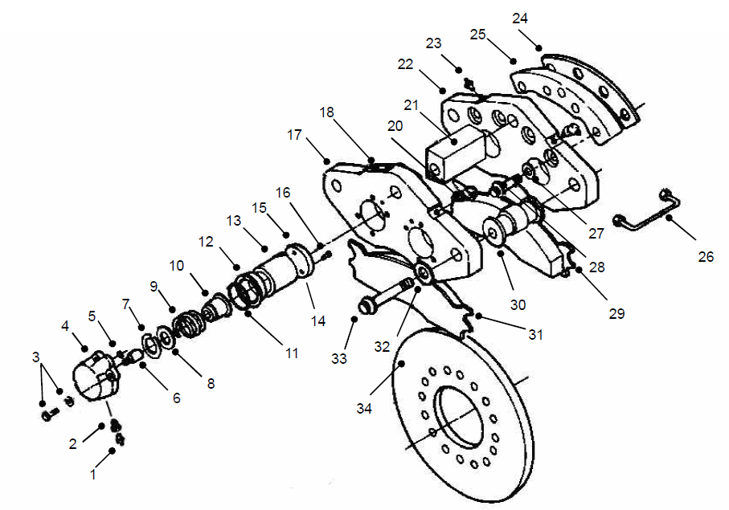
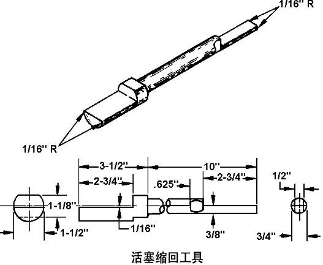
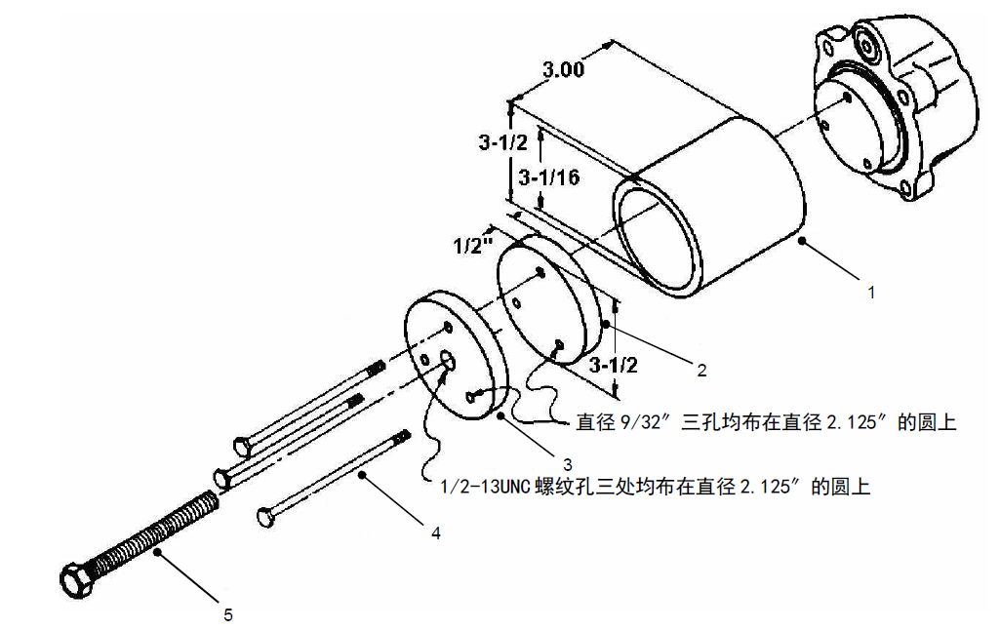
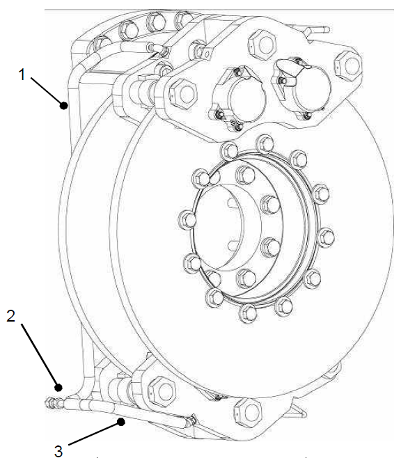

后制动安装. · REAR BRAKE MTG
Задний тормоз
Общие сведения (см. рис. 1)
В состав задних рабочих тормозов CARLISLE (Карлайл) входят 2 параллельно расположенных тормозных диска (6 и 10), которыми комплектуются два тормоза (3 и 14) в сборе. Тормозные диски устанавливаются на фланцах (9 и 11), закрепленных к вращающимся осям мотор-колес, тормоза устанавливаются на корпуса мотор-колес.
Осуществление торможения (см. рис. 2)
Масло под давлением от регулирующего клапана/клапана с педальным управлением поступает в корпус тормоза, затем подается к каждому поршню в сборе. Данное давление заставляет поршень двигаться, прижимать к тормозному диску, передать тормозное усилие на вращающуюся ось с электроприводом.
Тормоз в сборе имеет функцию саморегулировки для обеспечения фиксированного зазора между тормозными колодками и тормозным диском. После первоначального осуществления ряда циклов торможения можно отрегулировать данный зазор с помощью регулятора, расположенного на поршне с корпусом в сборе. Поршень (13) под давлением движется к тормозному диску (34), заставляет устранить зазор между прокладкой (8) и регулировочной втулкой (10), и сжать пружину. Добавочное давление заставляет регулировочную втулку (10) перемещаться в диапазоне, находящемся под контролем регулировочного рычага (6). Таким образом определен диапазон регулировки. При сбросе давления , пружина (9) заставляет поршень (13) возвращаться из регулирующего положения регулировочного втулки (10), также заставляет тормозные колодки в сборе (29 и 31) возвращаться. Избыточное давление может вызвать износ тормозной колодки или увод в сторону при торможении, привести к смещению регулировочной втулки (10) в новое положение регулировки.
Диагностика неисправностей, ремонт и регулировка (см. рис. 2)
Периодическое техническое обслуживание тормозной системы включает следующие виды работ:
1. Проверить надежность фиксации всех болтов и гидравлических фитингов.
2. Проверить наличие/отсутствие утечки масла.
ПРИМЕЧАНИЕ: В случае обнаружения утечки через дренажный клапан (2) на корпусе поршня, снять или очистить все болты. Перед установкой нанести клей Scotch-Weld No.2158 или подобный состав на резьбу. Клей должен высохнуть за 12-24 часа до заполнения тормозной системы рабочей жидкостью.
3. Проверьте опорный кронштейн и тормозную колодку в сборе (29 и 31) на наличие повреждений или износа. Если тормозная колодка изношена до индикатора в распорном кольце (30); или тормозная колодка повреждена, то замените в соответствии с указанным порядком.
ПРИМЕЧАНИЕ: Если износ тормозных колодок двух тормозов в сборе неодинаков, то следует заменить значительно изношенные тормозные колодки, не допускается смешенное использование новых и старых тормозных колодок в сборе в одном тормозе.
4. Проверить тормозной диск на наличие повреждений или износа, если толщина износа достигает 0,750 дюйма (19 мм), то следует заменить тормозной диск. Убедиться в надлежащей ровности поверхности тормозного диска, отсутствии углубления или царапин.
Удаление воздуха из тормозной системы
Выпуск воздуха из тормозной системы - это процесс удаления воздуха и других посторонних предметов из тормозной жидкости.
Удаление воздуха осуществляется путем нажатия педали тормоза и удерживания тормозной системы в требуемом положении или с помощью ручного тормоза.
Более подробную информацию о порядке для каждой системы см. в главе 050 «Гидравлическая система». Перед началом работы очень важно удалить воздух и другие посторонние предметы из гидравлического масла.
ПРИМЕЧАНИЕ: Если не указан сорт гидравлического масла, то в тормозной системе должно использоваться только гидравлические масла на минеральной основе SAE 10 или аналогичное масло. Нельзя оказывать давление на тормозную систему, за исключением случая, если суппорт в сборе садится к тормозному диску в сборе, тормозные колодки и другие компоненты установлены надлежащим образом.
Замена тормозных колодок (см. рис. 2)
Замена тормозных колодок производится в следующем порядке:
1. Припаркуйте карьерный самосвал в безопасном месте. Кроме включения стояночного тормоза, удерживайте ТС в неподвижном состоянии другими средствами.
2. Полностью сбросить давление в тормозной системе в соответствии с требованиями, указанными в разделе «Ремонт и регулировка».
3. При необходимости снять стояночный тормоз в сборе в соответствии с порядком, указанным в части 080 - «Тормозная система».
4. Снять винты (33), прокладки (32) и проставочные кольца (30) с любого из концов торсионных щитов (17 и 22) тормоза. Снять опорные башмаки и тормозные колодки в сборе (29 и 31) из тормоза.
Спецификация
1
Дренажный клапан
8
Прокладка
15
Перегородка
22
Торсионный щит
29
Опорный башмак и тормозная колодка в сборе
2
Пробка
9
Пружина
16
Винт
23
Маслосливное отверстие
30
Проставочное кольцо
3
Болт и шайба
10
Регулировочная втулка
17
Торсионный щит
24
Регулировочная прокладка
31
Опорный башмак и тормозная колодка в сборе
4
Корпус поршня
11
Уплотнения
18
Дренажный клапан
25
Перегородка
32
Прокладка
5
Уплотнения
12
Муфта
19
Пластина
26
Соединительный трубопровод
33
Винт
6
Регулировочный рычаг
13
Поршень
20
Штуцер
27
Прокладка
34
Тормозной диск
7
Опорное кольцо
14
Палец
21
Проставочное кольцо
28
Винт
Рис. 2. Разборка тормоза
5. Открутить болт дренажного клапана (1), сбросить давление масла.
ПРИМЕЧАНИЕ: В процессе замены тормозных колодок и удаления воздуха необходимо удалить гидравлическое масло, расположенное между тормозными колодками и тормозным диском. Слить масло через шланг в емкость во избежание загрязнения этих компонентов маслом.
6. Поставить специальное приспособление для возврата поршней (см. рис. 3) между тормозным диском (34) и поршнем (13), чтобы заставлять поршень возвращаться в исходное положение.
Рис. 3 Инструмент для втягивания пружины
ПРЕДУПРЕЖДЕНИЕ
Рабочая жидкость может быть агрессивной. Следует избегать попадания масла в глаза или длительного контакта масла с кожей.7. Проверить минимальную толщину тормозного диска. Если толщина составляет менее 0,75 дюйма (19 мм), то следует заменить тормозной диск.
8. Закрутите болт маслосливного отверстия (23), установите новые тормозные колодки в сборе (29 и 31) на тормоз. Убедитесь в расположении сборочной единицы на распорном кольце (30), на дальнем конце распорного кольца.
ПРИМЕЧАНИЕ: Не смешивайте новые и использованные тормозные колодки в сборе или тормозные колодки из разных материалов на одном и том же тормозе в сборе или мосту.
ПРЕДУПРЕЖДЕНИЕ
Используйте тормозную колодку в сборе, рекомендованные автозаводом или производителем самой колодки, в противном случае это может привести к отказу тормозов. Нельзя смешивать новые и использованные, асбестовые и неасбестовые тормозные колодки, и тормозные колодки из углеродистой стали на одном и том же тормозе в сборе или мосту.9. Установить прокладку (32) на винт (33). Установить проставочные кольца (30) на тормозные колодки в сборе (29 и 31). Вставить болт в проставочное кольцо и тормоз в сборе. Перед затяжкой болта убедиться в нахождении тормозных колодок в сборе в состоянии взаимной блокировки на 2 проставочных кольцах (30) с внешней стороны. Момент затяжки смазываемого болта составляет 600фут-фунтов (815 Н.м).
10. Установить стояночный тормоз (если он был снят) в соответствии с порядком, указанным в части 080 - «Тормозная система».
11. Проводить отдельное опорожнение тормоза в сборе в соответствии с порядком опорожнения тормоза.
12. Притереть тормозной диск и тормозные колодки в соответствии с установленным порядком.
Притирка тормоза
При установке новых тормозных дисков или тормозных колодок всегда следует проводить притирку. После ремонта тормозов и перед повторным вводом карьерного самосвала в эксплуатацию следует притереть тормоза. Несоблюдение порядка правильной притирки может привести к снижению тормозного эффекта и увеличения продолжительности торможения.
Появление дыма и неприятного запаха в зоне вокруг тормозов при температуре выше 350℉ (173℃) в процессе притирки является нормальным. Появление густого дыма и искр при температуре выше 700℉ (370℃) тоже является нормальным. Существует вероятность появления искр при температуре выше 900℉ (480℃).
ВАЖНОЕ ПРИМЕЧАНИЕ: Если появляются искры, то следует как можно скорее измерить температуру и продолжать водитель автомобиль для гашения искр. Искры могут появляться только в процессе притирки, они не должны появляться при нормальном торможении.
Доставить ненагруженный карьерный самосвал на место, где отсутствуют препятствий и людей. Тормозной путь в процессе притирки может быть длиннее тормозного пути, пройденного с момента торможения до полной остановки автомобиля в нормальных условиях.
ПРИМЕЧАНИЕ: Опыт показывает, что продолжение работы двигателя на высоких оборотах холостого хода при притирке облегчит охлаждение колеса с электроприводом.
ПРИМЕЧАНИЕ: В этом процессе передние тормоза должны находиться в подключенном состоянии, следует регулярно измерить их температуру и проверить наличие/отсутствии других проблем.
Притирка тормоза производится в следующем порядке:
Пусть карьерный самосвал движется со скоростью 5-10 миль/ч (8-10 км/ч), попеременно совершить торможение и растормаживание до тех пор, пока температура тормозного диска не достигнет 700-750°F (370-400°C).
Наиболее часто используемый метод заключается в следующем: пусть карьерный самосвал проедет с частично нажатой педалью тормоза 50 футов (15 м), затем отпустить педаль примерно 10 секунд, во всем процессе карьерный самосвал должен находиться в подвижном состоянии. Повторять данную процедуру до достижения требуемой температуры.
ПРИМЕЧАНИЕ: Измерить температуру на поверхности тормозного диска с помощью пирометра или аналогичного прибора для измерения температуры на поверхности. После проезда 100 ярдов (90 м) следует измерить температуру на поверхности тормозного диска или измерить температуру вокруг него в соответствии с установленными требованиями.
b. Охладите тормозной диск до 350℉ (173℃).
ПРИМЕЧАНИЕ: Этот процесс охлаждения занимает до 30 минут, это зависит от температуры тормозного диска и температуры окружающей среды. В этом процессе желательно плавно привести карьерный самосвал в действие для обеспечения равномерного охлаждения тормозного диска. Во всем процессе охлаждения следует освободить тормоза.
c. Повторять шаг a до достижения температуры заднего тормозного диска до 800-850°F (425-455°C). Если появляются искры, следует привести автомобиль в действие для их гашения.
ПРИМЕЧАНИЕ: В этом процессе следует регулярно проверить переднего тормозного диска, чтобы убедиться в том, что температура тормозного диска не превышает 1000℉ (540℃).
d. Допускается охлаждение тормозного диска до 350℉ (173℃).
e. Повторять шаг a до достижения температуры заднего тормозного диска до 900-950°F(480-510°C). Если появляются искры, следует привести автомобиль в действие для их гашения.
f. Допускается охлаждение тормозного диска до 350℉ (173℃).
g. Когда тормозной диск охлаждается до 250-300°F(120-150°C), установить заднюю крышку картера моста, при этом можно привести автомобиль в действие.
ПРИМЕЧАНИЕ: Процесс охлаждения занимает до 30 минут, это зависит от температуры тормозного диска и температуры окружающей среды. В этом процессе желательно плавно привести карьерный самосвал в действие для обеспечения равномерного охлаждения тормозного диска. Во всем процессе охлаждения следует освободить тормоза.
Снятие (см. рис. 1)
Снятие тормоза в сборе из колеса с электроприводом производится в следующем порядке:
ПРИМЕЧАНИЕ: Данный порядок распространяется на двухдисковый тормоз. Снятие однодискового тормоза производится в подобном порядке.
1. Припаркуйте карьерный самосвал в безопасном месте. Кроме включения стояночного тормоза, удерживайте ТС в неподвижном состоянии другими средствами.
2. Полностью сбросить давление в тормозной системе с гидроприводом в соответствии с требованиями, указанными в разделе «Ремонт и регулировка».
3. Откройте дренажный клапан, сбросьте остаточное давление в трубке подачи масла. Демонтируйте все гидротрубопроводы, закупорьте все открытые концы заглушками.
ПРИМЕЧАНИЕ: Полностью слить масло через тормозные маслопроводы.
4. Снимите переднюю часть тормоза в сборе с внешней стороны.
a. Снять болты и прокладки из тормоза, извлечь подставки и тормозные колодки в сборе.
b. Снять другие болты, прокладки и подставки. Разместить торсионный щит тормоза в чистом месте.
5. Снять болт и прокладка, снять тормозной диск из соединительного фланца, чтобы снять тормозной диск с внешней стороны.
6. Снять болт и прокладка для крепления торсионного щита к монтажной петле, снять торсионный щит, разместить торсионный щит в чистом месте.
7. Снять передний торсионный щит в сборе из тормоз в сборе с внутренней стороны согласно шагу 4.
8. Снять болт и прокладка, извлечь монтажный фланец тормозного диска с внешней стороны.
9. Снять болт и прокладка, снять тормозной диск с внутренней стороны.
10. Снять задний торсионный щит и подставку из тормоза в сборе с внутренней стороны согласно шагу 6.
Разборка (см. рис. 2)
Разборка тормоза производится в следующем порядке:
1. Заделать одно резьбовое отверстие 7/16-20 в корпусе поршня и использовать другое отверстие в качестве входного отверстия. Присоединить заполненный маслом гидронасос к данном отверстию.
2. Оказывать давление на корпус поршня, чтобы оторвать поршень от регулировочной втулки (10). Рекомендуется установить C-образные зажимы по обе стороны поршня и их зафиксировать, пусть поршень медленно оторвет от корпуса поршня вслед за повышением давления.
ПРИМЕЧАНИЕ: Извлечение поршня может производиться с помощью инструмента (рис. 4). Если используется поршневой съемник, то следует заранее снять перегородка (15) с поршня, выполнить шаг 3.
3. В случае обнаружения повреждения перегородки (15), следует ее заменить, снять 3 болта крепления, извлечь перегородку из поршня.
ПРИМЕЧАНИЕ: Откручивание болтов (16) требует больший крутящий момент, поскольку на них были нанесен клей. Нагрейте болты до 375°F (190°C), это позволяет откручивать их с меньшим крутящим моментом.
Осмотр и ремонт (см. рис. 2)
Ремонт разобранных компонентов производится в следующем порядке:
1. Проверить тормозные колодки в сборе (29 и 31), наблюдать за наличием/отсутствием износа и повреждений. Если степень износа опорного башмака достигает края выреза в проставочном кольце (30), то следует заменить тормозные колодки
2. Проверить тормозной диск (34) на наличие износа и повреждений.
3. Всегда следует заменить все уплотнительные элементы (5 и 11) при разборке тормоза.
4. Проверить надежность фиксации регулировочного рычага (6) на каждом корпусе поршня (4). В случае обнаружения ослабления рычага, следует его снять и очистить, протереть резьбу.
Нанесите клей Scotch-Weld No.2158 на резьбу направляющего стержня, затяните до достижения момента 145-150 фунт-футов (16-17 Н.м), клей высыхает в течение 12-24 часов.
Рис. 4. Приспособление для демонтажа поршня
5. В случае обнаружения царапин, надиров на поверхности регулировочной втулки (10) или других дефектов на поверхности, следует отполировать наждачной бумагой с мелким зерном. Замена может негативно влиять на работу регулировочной втулки и привести к повреждениям компонентов.
6. В случае обнаружения повреждений и царапин или изгиба перегородки (15), следует ее заменить.
7. Отполируйте незначительные надиры или царапины на уплотнительной поверхности корпуса поршня тонкой наждачной бумагой (4); замените любой поцарапанный или поврежденный корпус поршня.
8. Тщательно очистить тормоз, заменить любые изношенные или поврежденные компоненты.
9. Удалить незначительные царапины и риски на поверхности поршня наждачной бумагой с мелким зерном.
ПРИМЕЧАНИЕ: Заменить поршень наружным диаметром менее 2,6185 дюйма (66,5 мм).
10. Заменить все поврежденные и значительно изношенные детали.
11. Удалить все остатки клея с болта перегородки.
ПРИМЕЧАНИЕ: Заменить корпус поршня с отверстием внутреннего диаметра более 2,6305 дюйма (66,8 мм).
Сборка (см. рис. 3)
Сборка тормоза в сборе производится в следующем порядке:
1. Нанести клей Scotch-Weld No.2158B/A или подробный состав как минимум на 4-5 витков резьбы болта. Зафиксировать перегородку (15) к поршню болтом.
2. Установить винт (16) и затянуть его надлежащим образом.
ПРИМЕЧАНИЕ: Адгезивная способность клея может оказаться сильнее через ночь. Клей способен выдерживать температуру 350℉ (175℃), при высокой температуре клей размягчает, после охлаждения жесткость и адгезивная способность клея доведены до изначального состояния.
3. Если существует необходимость повторной установки регулировочного механизма, то следует нанести клей Scotch-Weld No.2158 на резьбу рычага, момент затяжки составляет 130-145 дюйм-фунтов (15-16Н.м), клей должен высохнуть за 12-24 часа.
ПРИМЕЧАНИЕ: Смазать все резиновые уплотнительные элементы, узлы и детали маслом, которое совместимо с используемым маслом в тормозной системе.
ПРЕДУПРЕЖДЕНИЕ
Рабочая жидкость может быть агрессивной. Следует избегать попадания масла в глаза или длительного контакта масла с кожей.4. Установить втулку (10), пружину (9), шайбу (8) и опорное кольцо (7) на поршень (13). Заставлять опорное кольцо двигаться и прижимать к пружине с помощью трубки или подробного инструмента до момента посадки опорного кольца в канавку поршня.
5. Установить уплотнительное кольцо в канавку корпуса поршня.
6. Зафиксировать поршень в сборе (включая уплотнительное кольцо) на регулировочном рычаге (6) корпуса поршня. Заставлять поршень (13) двигаться к нижней части отверстия в поршне с помощью тисков, зажимного приспособления или валика.
7. Переместить муфту (12) на поршне (13) до момента соприкосновения фланца с корпусом поршня (4). Зафиксировать внутреннюю кромку муфты в канавку поршня. Запрессовывать края фланца муфты в канавку на поверхности корпуса поршня.
8. Установить уплотнительный элемент (5) в канавку корпуса поршня, убедиться в правильной установке.
9. Установить пробку (2) и дренажный клапан (1) в нижнюю часть корпуса поршня (4). Перед установкой следует нанести клей Scotch-Weld No.2158 на резьбу пробки.
ПРИМЕЧАНИЕ: Клей должен высохнуть за 12-24 часа до заполнения корпуса поршня тормозной жидкостью.
10. Установить корпус поршня в сборе на торсионный щит (17 и 22). Убедиться в совмещении буртика корпуса поршня (4) с центром торсионного щита. Зафиксировать каждый поршень с корпусом в сборе болтом и прокладкой. Нанести герметик Loclite на резьбу болта, затянуть болт до достижения момента 24-26 фут-фунтов (32-35 Н.м).
Установка
Установка тормоза в сборе производится в следующем порядке:
ПРИМЕЧАНИЕ: Шаги 1, 2, 3, 4, 6, 7, 8, 13 показаны на рис. 2; остальные шаги показаны на рис. 1.
1. Перед установкой следует снять соединительный трубопровод (26 ) и три набора винтов (33), прокладку (32) и проставочные кольца (21 и 30) из тормоза. Передняя и задняя части тормоза должны быть отсоединены друг от друга.
2. Перед установкой убедиться в полном возврате поршня (13) в корпус поршня (4). Заставлять не полностью возвращенный поршень возвращаться в исходное положение с помощью С-образного зажима.
ПРИМЕЧАНИЕ: Тормоза с внутренней и внешней сторон могут быть взаимозаменяемы. Однако при установке используйте оригинальные детали тормозов в сочетании со степенью износа других компонентов, убедитесь в надлежащей установке.
ПРИМЕЧАНИЕ: Если существует необходимость замены болтов или прокладок, то следует использовать детали с одинаковой прочностью или более высокой прочностью. Прочность всех болтов этих сборочных единиц должна достигать класса SAE8. Все прокладки должны быть закаленными.
ПРИМЕЧАНИЕ: В процессе установки и снятия можно использовать направляющий штырь как вспомогательный инструмент. В качестве направляющего штыря может использоваться длинный резьбовой шток 7/8NC×13".
3. Установить два направляющих штыря 7/8 NC×13 в монтажные отверстия тормоза с одной стороны монтажной петли тормоза.
4. Сдвиньте кронштейн меньшего размера (25) тормоза на направляющем штифте к установочному кольцу тормоза. Сдвиньте (задний) тормоз с внутренней стороны (22) к кронштейну меньшего размера тормоза, установите два соединительных болта (28) и шайбы (27) с внутренней стороны, но не нужно регулировать крутящий момент.
5. Установить фланец (11) между тормозным диском (10) и мотор-колесом, зафиксировать тормозной диск болтом (4) и шайбой (5), момент затяжки болтов составляет 160 фут-фунтов (217 Н.м).
6. Установите распорные кольца (21 и 30), тормоз с внешней стороны (17) и три набора болтов (33), шайб (32) с трубой в сборе (26), затяните болты до достижения момента 750 фунт-футов (1017 Н.м).
7. Измерьте расстояние между тормозными колодками (29 и 31) с обеих сторон и тормозным диском, проверьте центрирование тормоза в сборе относительно тормозного диска (отклонение должно быть не более 0,010"). В случае нарушение центрирования тормоза относительно тормозного диска, ослабьте два ранее установленных болта крепления (28) тормоза, отрегулируйте зазор между кронштейном меньшего размера тормоза и тормозом с внутренней стороны с использованием регулировочных прокладок (24), обеспечите центрирование тормозных колодок с обеих сторон относительно тормозного диска.
ПРИМЕЧАНИЕ: цель установки регулировочной прокладки без снятия болта (28) может быть достигнута путем прорезки от внешнего края регулировочной прокладки до четырех отверстий.
8. После центрирования тормоза в сборе относительно тормозного диска, снимите два направляющих штифта 7/8 NC x13", установите два оставшихся болта и шайбы (28 и 27), затяните четыре болта до достижения момента 455 фунт-футов (617 Н.м).
Спецификация
1
Труба в сборе
2
Штуцер
3
Труба в сборе
Рис. 5. Соединительный трубопровод тормоз9. Установите кронштейн большего размера (17) тормоза на установочное кольцо тормоза, зафиксируйте болтом (8) и шайбой (18), затяните болт до достижения момента 280 фунт-футов (380 Н.м).
10. Установить тормоз с внутренней стороны на кронштейн тормоза с помощью болта и шайбы, но не нужно затянуть до заданного значения.
11. Установить монтажный фланец (9) тормозного диска на фланец (11) мотор-колеса с помощью болта (7) и шайбы (8), момент затяжки болта составляет 280 фут-фунтов (380 Н.м).
12. Установить тормозной диск (6) на фланец (9), зафиксировать тормозной диск с помощью болта (4) и шайбы (5), момент затяжки болта составляет 160 фут-фунтов (217Н.м).
13. Установить тормоз с внешней стороны согласно шагу 6.
14. Центрировать тормоз в сборе согласно шагу 7.
15. Затянуть болт крепления (21) тормоза до достижения момента 455 фут-фунтов (617 Н.м).
16. Установите ранее не собранные выпускной клапан (1), соединительный трубопровод (26), см. рис. 2; присоедините штуцер (1) и трубопровод в сборе (2) к соответствующим присоединительным отверстиям тормоза в сборе, см. рис. 5.
17. Установить штуцеры, присоединить гидравлические трубопроводы к тормозу в сборе.
18. Установить стояночный тормоз в сборе в соответствии с порядком, указанным в части 080 - «Тормозная система».
19. Полностью удалить воздух из тормоза в сборе в соответствии с порядком, указанным в части 050 - «Гидравлическая система».
20. Притереть все новые тормозные колодки в соответствии с требованиями, указанными в разделе «Ремонт и регулировка».
21. Проводить испытания системы, проверить правильность установки.
Тормозная система – задний тормоз (рабочий)
080-0010
Тормозная система – задний тормоз (рабочий)
080-0010
2
5
Тормозная система – задний тормоз (рабочий)
080-0010
1
Тормозная система – задний тормоз (рабочий)
080-0010
Дополнения - Масса компонентов
200-0090
Дополнения - Масса компонентов
200-0090
8
9
Дополнения - Масса компонентов
200-0090
Приспособление для возврата поршней
Три резьбовых отверстия 1/2-13 UNC равномерно расположены по окружности диаметром 2,125″
Три отверстия диаметром 9/32′′ равномерно расположены по окружности диаметром 2,125′′
Иллюстрации



